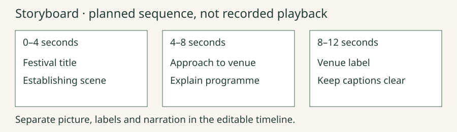
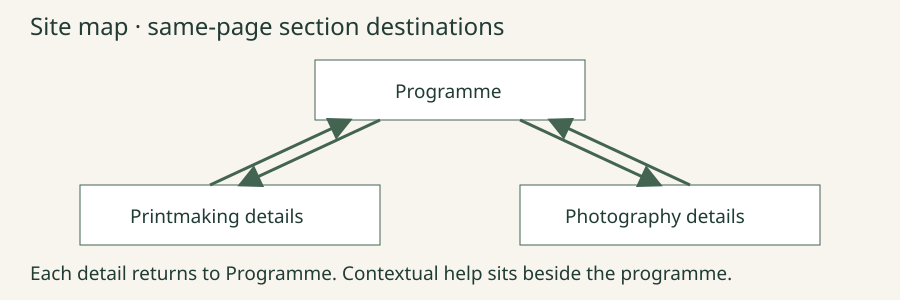
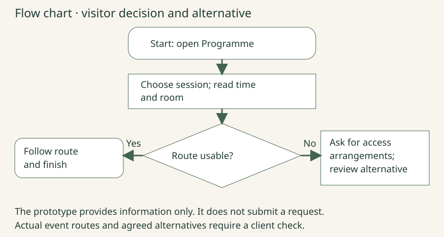

Festival planning representations
Invented model, not actual project progress. These are distinct representations for different planning questions.
Storyboard: twelve-second introduction

- 0–4 s: festival title over an establishing scene; narration introduces the event.
- 4–8 s: approach to venue; narration explains how to find the programme.
- 8–12 s: venue label; preserve caption space and end with a readable programme instruction.
Site map

Programme is the parent destination. Printmaking and Photography are child session destinations. Each child provides a labelled return to Programme; the Help control sits beside the task. The reference uses same-page section links, not a server booking system.
Decision flow

Start → Open Programme → Choose a session → Read time and room → Can the visitor use the stated route? If yes: follow the route and finish. If no: use the published help/access contact process, then review an agreed alternative. The class prototype does not submit a request.
Gantt-style day blocks and dependencies
| Task / prerequisite | D1 | D2 | D3 | D4 | D5 | D6 |
|---|---|---|---|---|---|---|
| Confirm brief / none | Confirm | |||||
| Prototype / brief | Review | |||||
| Assets / brief | Prepare | |||||
| Build / prototype + assets | Build | Build | ||||
| Test / build | Test | |||||
| Revise + retest / findings | Retest |
Text equivalent: Confirm on day 1. Two available people review the prototype and prepare assets in parallel on day 2. Build requires both and takes days 3–4. Test on day 5; revise/retest on day 6. If one person must do both day-2 jobs, revise the schedule and dependent dates. Day blocks are illustrative, not additional teaching weeks.